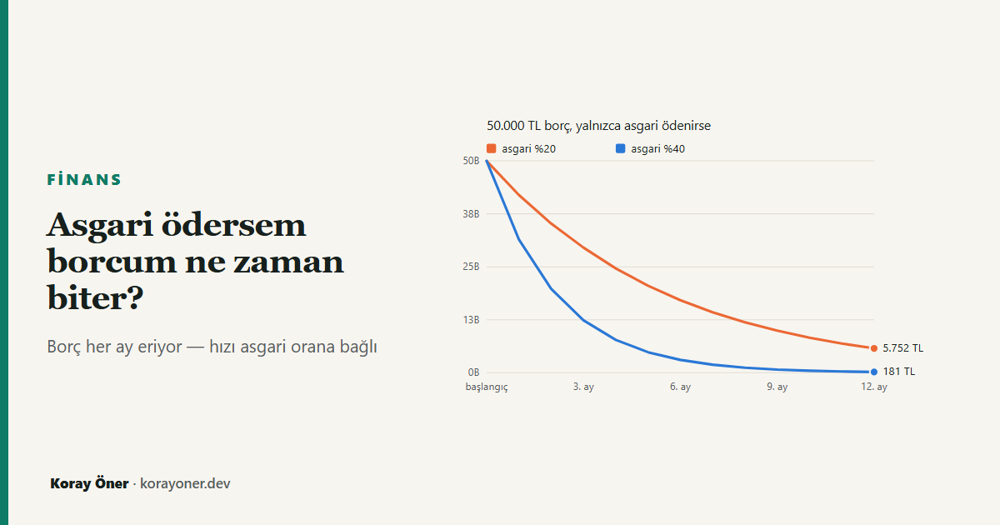

Kısa cevap
Biter. Türkiye'de asgari ödeme, dönem borcunun sabit bir yüzdesi olarak belirleniyor — %20 ya da %40. Bu oran aylık faizin çok üzerinde olduğu için borç, yeni harcama yapılmadığı sürece her ay küçülmek zorunda.
Borcun büyümeye başlaması için aylık akdi faizin %19,23'ü aşması gerekirdi. TCMB'nin izin verdiği en yüksek oran ise %4,25 — yani eşiğin dörtte birinden az.
Bunun bedeli var: %20 asgariyle ilerleyen biri, hiç yeni harcama yapmasa bile anaparanın yaklaşık beşte biri kadar faiz ve vergi ödüyor.
Neden "hiç bitmez" değil?
Bu uyarı yabancı kaynaklardan olduğu gibi çevrilmiş. Çevrildiği yerlerde doğru: birçok ülkede asgari ödeme, bakiyenin %1–2'si gibi çok küçük bir oran ya da sabit bir tutar. Faiz bunun üzerindeyse borç gerçekten hiç bitmez.
Türkiye'de asgari ödeme oranını BDDK belirliyor ve yönetmelik oranın dönem borcunun %20'si ile %40'ı arasında olmasını şart koşuyor. Yani asgari, bakiyeye oranlı ve yüksek. Mekanizma şöyle işliyor: ay sonunda borcun %20'si ödeniyor, kalan %80'e faiz biniyor ve ertesi ayın borcu ortaya çıkıyor.
ertesi ayın borcu = (1 − asgari oran) × borç × (1 + aylık faiz)
Bu çarpımın 1'in altında kalması, yani borcun küçülmesi için asgari oranın faizden büyük olması yetiyor — daha doğrusu faizin bir gömlek altındaki faiz ÷ (1 + faiz) değerini aşması. Aşağıdaki tabloda her faiz bandı için bu eşik ve yasal asgarinin eşiğe oranı var.
| Dönem borcu | Aylık azami akdi faiz | KKDF ve BSMV dahil | Borcun büyüme eşiği | Yasal asgari (%20) eşiğin kaç katı |
|---|---|---|---|---|
| 30.000 TL'ye kadar | %3,25 | %4,22 | %4,05 | 4,9 kat |
| 30.000 – 180.000 TL | %3,75 | %4,87 | %4,65 | 4,3 kat |
| 180.000 TL üzeri | %4,25 | %5,52 | %5,24 | 3,8 kat |
En kötü durumda bile — en yüksek faiz bandında, KKDF ve BSMV dahil — yasal asgari, eşiğin üç katından fazlası. Bu, oranların bugünkü seviyesine bağlı bir tesadüf değil: faizler ikiye katlansa bile %20'lik asgari borcu eritmeye devam ederdi. Mekanizmanın bozulması için aylık akdi faizin %19,23'e çıkması, yani bugünkü azami oranın 4,5 katına ulaşması gerekirdi.
Peki ne kadar sürer, ne kadara mal olur?
Borcun eridiği kesin; hızı ise asgari orana bağlı ve aradaki fark büyük. Aşağıdaki tablo, yeni hiç harcama yapılmadığı varsayımıyla bir yılın sonunda ne kaldığını ve kapanana kadar ödenen toplam faiz ile vergiyi gösteriyor.
| Borç | Kart limiti | Asgari oran | 12 ay sonra kalan | Eriyen kısım | Toplam faiz ve vergi | Anaparaya oranı |
|---|---|---|---|---|---|---|
| 30.000 TL | 50.000 TL | %20,00 | 3.387 TL | %88,71 | 6.101 TL | %20,34 |
| 50.000 TL | 50.000 TL | %20,00 | 5.752 TL | %88,50 | 10.964 TL | %21,93 |
| 80.000 TL | 150.000 TL | %40,00 | 292 TL | %99,64 | 6.088 TL | %7,61 |
| 150.000 TL | 200.000 TL | %40,00 | 550 TL | %99,63 | 11.570 TL | %7,71 |
Asgari oranın kartın limitine bağlı olduğuna dikkat edin — borcuna değil. Bunun pratik bir sonucu var: 50.000 TL'den büyük bir borç ancak yüksek limitli bir kartta olabileceği için, o borç zaten %40'lık gruptadır. "150.000 TL borcum var, asgari %20 ödüyorum" diye bir durum yok.
Tabloda görünen asıl fark bu: %40 asgari, borcu bir yılda neredeyse tamamen bitiriyor ve toplam faiz yükünü üçte birine indiriyor. %20'lik grupta ise borcun küçülmesi yıllara yayılıyor; bakiye birkaç ay içinde küçük rakamlara inse de son kuruşuna kadar kapanması beş yıla yaklaşabiliyor.
Asıl tuzak: ertesi ay yapılan harcama
Buraya kadarki hesabın tek bir varsayımı vardı: yeni harcama yok. Gerçek hayatta borcun bitmemesinin sebebi neredeyse her zaman bu varsayımın bozulması. Kart kapatılmadığı sürece her ay yeni harcama ekleniyor ve borç, eriyenin yerine konanla ayakta kalıyor.
Eşiği hesaplamak kolay: ödediğiniz asgari ile o ayın faizi arasındaki fark, borcu olduğu yerde tutan harcama tutarıdır.
| Borç | Asgari oran | Ayda ödenen asgari | O ayın faizi | Borcu sabit tutan harcama |
|---|---|---|---|---|
| 30.000 TL | %20,00 | 6.000 TL | 1.014 TL | 4.986 TL |
| 50.000 TL | %20,00 | 10.000 TL | 1.950 TL | 8.050 TL |
| 80.000 TL | %40,00 | 32.000 TL | 2.340 TL | 29.660 TL |
| 150.000 TL | %40,00 | 60.000 TL | 4.387 TL | 55.613 TL |
Bu tutarın altında kaldığınız her ay borç küçülür, üzerine çıktığınız her ay büyür. Yani soru "asgari mi ödesem, fazlası mı" değil; "bu ay karta ne kadar dokunacağım". Asgari ödeme borcu eritir, alışkanlık onu geri getirir.
Yöntem, sınırlar ve varsayımlar
Faiz oranları TCMB'nin azami oranlarıdır; bankalar bunları aşamaz ama altında kalabilir, dolayısıyla buradaki sayılar en kötü hâli gösterir. Oranlar dönem borcunun büyüklüğüne göre üç banda ayrılıyor ve hesap, borç eridikçe bandın değişmesini de hesaba katıyor.
Faizin üzerine %15 KKDF ve %15 BSMV biniyor: 100 TL faiz, 130 TL olarak ödeniyor. Aynı oranlar sitedeki kredi hesaplayıcısında ihtiyaç kredisi için de kullanılıyor; iki kaynağın ayrışmadığı testle ayrıca doğrulanıyor.
Hesap, asgari tutarın tam olarak ve zamanında ödendiğini varsayar. Asgari ödenmezse akdi faiz yerine daha yüksek olan gecikme faizi işler ve tablo tamamen değişir — bu yazı o durumu kapsamıyor. Nakit çekim de kapsam dışı: dönem borcu ne olursa olsun en üst banttan faiz işler ve faiz işlem gününde başlar.
Yazı finansal danışmanlık değildir. Kart sözleşmenizdeki oranlar TCMB azamisinin altında olabilir; kesin tutarlar için kendi ekstrenizi esas alın.
Kaynaklar
- TCMB — Kredi Kartı İşlemlerinde Uygulanacak Azami Faiz Oranları. Yazıdaki oranlar 1 Eylül 2026'dan geçerli tablodan alındı.
- Banka Kartları ve Kredi Kartları Hakkında Yönetmelik, m.22/7 — Kurul'un asgari tutarı dönem borcunun %20'si ile %40'ı arasında belirleme yetkisi.
- BDDK Kurul Kararı, 26.09.2024 tarih ve 10970 sayılı — asgari ödeme oranının kart limitine göre %20 ve %40 olarak belirlenmesi.
Sık sorulan sorular
Asgari ödersem kredi kartı borcum hiç bitmez mi?
Biter. Asgari ödeme dönem borcunun %20'si ya da %40'ı olduğu için borç her ay kendiliğinden küçülür. Borcun büyümeye başlaması için aylık akdi faizin %19,23'ü aşması gerekirdi; bugünkü azami oran %4,25.
Asgari ödeme oranı kaç?
Kartın limitine bağlı: limiti 50.000 TL'ye kadar olan kartlarda dönem borcunun %20'si, üzerindekilerde %40'ı. Oran borca değil limite bağlı olduğu için 50.000 TL'den büyük bir borç zaten %40'lık gruptadır.
Asgari ödemenin maliyeti ne kadar?
%20 asgariyle ilerleyen biri, yeni harcama yapmasa bile anaparanın yaklaşık beşte biri kadar faiz ve vergi öder. %40 asgaride bu yük yaklaşık %8'e iner.
Asgariden az ödersem ne olur?
Kart gecikmeye düşer ve akdi faiz yerine daha yüksek olan gecikme faizi işler. Asgariyi ödemek ile ödememek arasındaki fark, asgari ile tamamını ödemek arasındaki farktan çok daha büyüktür.
İlgili araçlar ve yazılar
- Borç kapatma planı — birden fazla borcu hangi sırayla kapatmak daha ucuz.
- Kredi hesaplama — KKDF ve BSMV dahil gerçek aylık maliyet.
- Kredinin yıllık maliyet oranı — aylık faiz neden yıllıkta göründüğünden büyük.
- Krediyi erken kapatmak mantıklı mı?